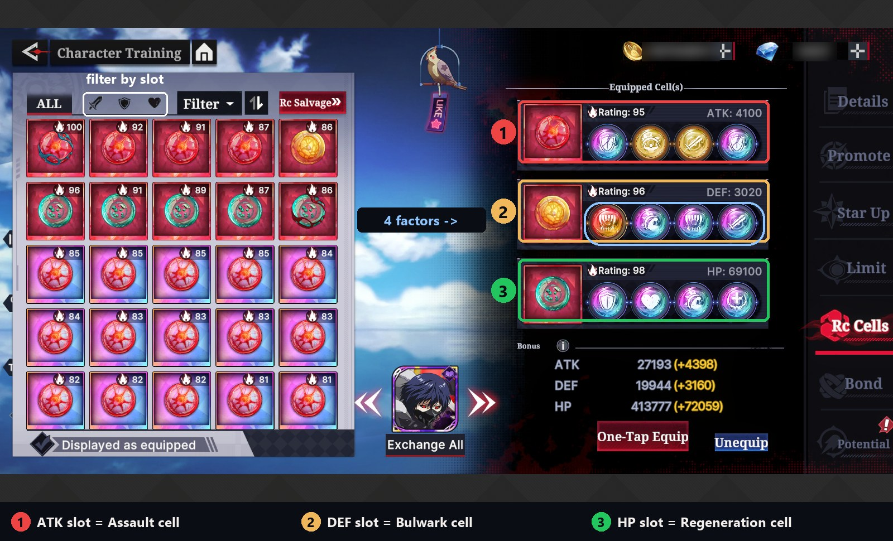
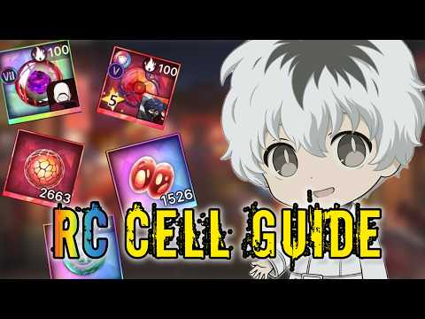
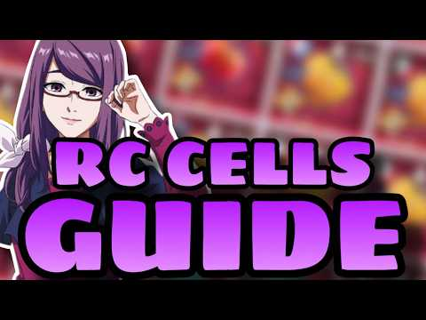
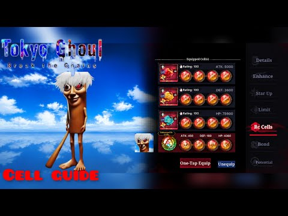
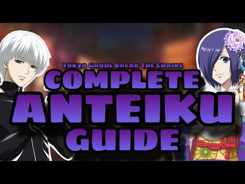
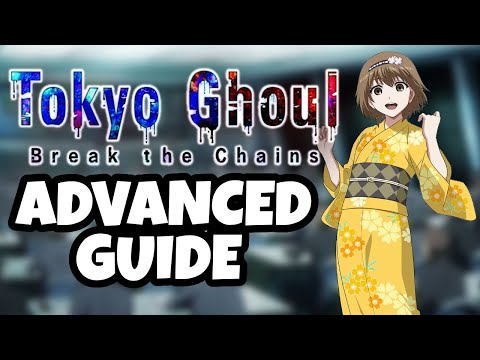
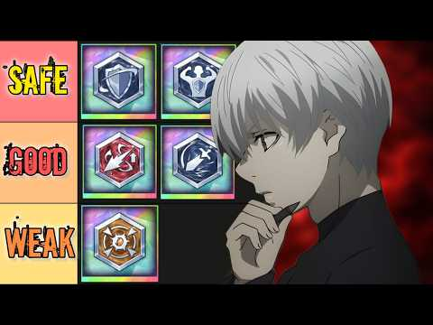
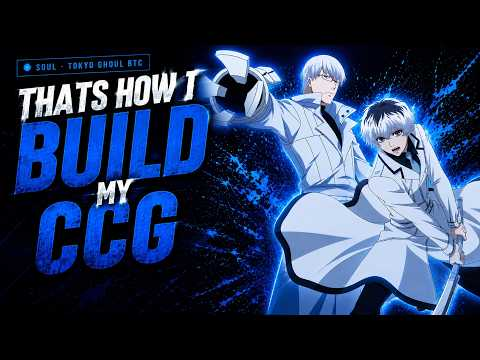
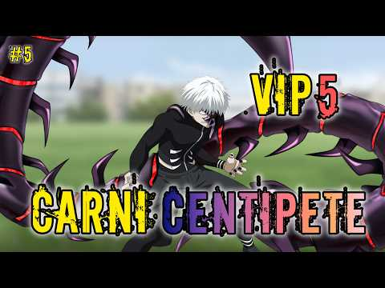
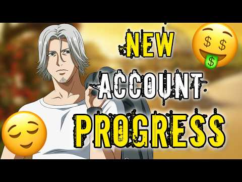

Full Score cell chest: what do I pick?
For your main damage dealer, pick the 4 ATK factor version in that unit's colour. Use it in whichever slot holds their weakest cell.
Full answer + evidence ↓LR Tactic Selection Chest: which one?
Fortify. It's the safe pick, and creators put it on every unit. Potent Tactic is second.
Full answer + evidence ↓What is Abyssal Battlefield?
A weekly solo roguelike. You bring 1 character (it counts as full stars), walk a map, pick buffs and beat bosses for Abyss Coins. Don't quit mid-fight, or the run fails.
Full answer + evidence ↓QUESTION 1Full Score cell chests: what should I pick?
Answer
- Every character has 3 cell slots: ATK, DEF and HP. Assault goes in ATK, Bulwark in DEF, Regeneration in HP. They never compete, so the type you pick is just which slot you are filling.
- Who: your main damage dealer first, then your second damage dealer.
- Factors: on a damage dealer, take 4 ATK factors, whatever the slot. A Bulwark with 4 ATK is a great pick: the slot still gives its DEF, and all 4 factors add attack.
- Supports / buffers (Hinami, Hideyoshi and other units whose job is to stay alive): 4 HP factors.
- Colour: pick the cell attribute that matches the unit (red STR, green SKL, blue SPD, and so on). A match adds +5% to attack-related stats. "No attribute" gives nobody the bonus.
- Which slot first: the one where the unit's current cell is weakest. If they're all equal, Assault first, then Regeneration, then Bulwark. Our call
- Skip the PEN Rate and CRIT DMG versions for now. Only ATK, DEF and HP factors raise your CP, and CP decides who moves first. Our call, based on the Aslan quote below
- Don't salvage or burn full-score cells as Ability Ascension material while one of your main team's slots still holds a worse cell.

Which chest gives what Game text
| Chest (item name in game) | What the item text says | Pick for a damage dealer |
|---|---|---|
| Full Score Cell Selection Casket I (the one in the November Group Buy) | "Use to choose one: Full Score STR, SKL, SPD, PSY, WIT or DST Cell. (Each cell contains 4 ATK UR Factors or 4 HP UR Factor.)" | The carry's colour, 4 ATK |
| Full Score Assault Cell Selection Casket IV / V | "select and get 1 Full Score Assault Cell with identical 4 UR Factors. Including: ATK, HP, PEN Rate, and CRIT DMG Factors" | ATK (not PEN or CRIT DMG) |
| Full Score Assault Cell Selection Casket | "Full Score STR, SKL, or SPD Assault Cell. (Each cell contains 4 ATK Factors.)" | The carry's colour |
| Full Score Bulwark Cell Selection Casket | "Full Score STR, SKL, or SPD Bulwark Cell. (Each cell contains 3 ATK Factors and 1 DEF Factor.)" | Fine. It's still 3 ATK |
| Full Score Regeneration Cell Selection Casket | "Full Score STR, SKL, or SPD Regeneration Cell. (Each cell contains 3 ATK Factors and 1 HP Factor.)" | Fine. It's still 3 ATK |
| Random Full Score UR Factor Attribute Cell | "Obtain 1 random Full Score cell, which guarantees 4 random UR factors. Probability for 4 basic stat factors: 1%; 3 basic stat factors: 24%; 2 basic stat factors: 30%; 1 basic stat factor: 45%" | Random, so there's no choice to make |
Source: the game's English text file, items 21296, 21284/21297, 20342, 20341, 20343 and 21283. The chest you open shows its own choices on screen, so match the row above to the name on your chest.
Where these words come from
- Game text
These slots are for equipping Rc Cells. They come in three types: ATK, DEF, and HP.
The game's own Rc Cell tutorial (text id GuideDialogue_RcCell_4). The screenshot above shows the same three slots. - Creator
We have 3 different types. One is HP, one is for defense and one is for attack. … The 100 cell has 3,600 Def and the attack cell has 5,000.
- Creator
when equipped by a with character attack related stats increase by 5% during battle. … And the color is always 5%.
- Creator
for example on this blue Toka while it is defense and HP cells they still have 4x attack substats. … my Toka has full attack … My Hinami has the opposite, it's full HP.
Shi, "RC CELL GUIDE", April 6, 2026, at 2:23. This is why a Bulwark or Regeneration cell with 4 ATK factors is right for a damage dealer. - Creator
Full HP is always the best to go on Hide … For the Hinami, um again, I would go full HP … [on Kaneki] You of course want to play him full attack.
Shi, "EVERYTHING YOU NEED TO KNOW ABOUT ANTEIKU", 2026 (video; the RC cell part is in the second half). - Creator
The optimal cells for your units are your 4x substat cells. These are cells that have four of the same sub stat, such as the 4x attack assault cell. … For your main damage dealers, prioritize starring up your assault cell first, then your regeneration cell, and then finally your bulwark cells.
snowymeadows, "Advanced Guide | Pushing your Account in the Mid-Game", Oct 2, 2025 (video). This is an older video. It's the only source for the Assault → Regeneration → Bulwark order, so that order is marked "Our call". - Creator
And why are attack, defense and HP so important? These are the only ones that bonuses your CP … Crit damage is not a bonus for your CP.
Aslan, "RC CELL Guide!", at 19:42. Behind CP: in battle, the team with higher CP moves first (game text "CP Match"). - Game text
Players may consume RC Cells with a full score and all UR Factors to perform Ability Ascension.
Cell Fusion rules (CellFusion_RuleDesc_1_1_1). Full-score cells are also upgrade food, so equip them first.
QUESTION 2LR Tactic chests: which Tactic should I take?
Answer
- From an LR Tactic Selection Chest, take Fortify. Second choice: Potent Tactic.
- Aim for Fortify on every character you field. Each character gets 3 Tactic slots, opening at level 1, level 250 and level 265.
- Healing Prohibition used to be a top pick, but the newest creator list (Nov 16) dropped it to mid. Lots of characters already cut healing.
- Your back-up and supports can carry the Assistance Tactic, which works from the back-up slot.
- A random LR Tactic chest gives no choice, so just open it.
Where these words come from
- Game text
When the battle starts, reduce your additional damage taken by 60% and increase your CRIT DEF by 50%
Fortify at LR (SkillDesc_Tactic023_gs6). - Game text
When your current HP is above 50%, increase DEF by 15% and reduce damage taken by 10%.
Potent Tactic at LR (SkillDesc_Tactic004_qx6). - Creator
This is a really really really good pick, safe pick. And if you like don't know what to go for at all for the choosable LR tactic, go for [Fortify] guys. You can't do anything wrong.
- Creator
you want fortify on every single unit. So, every unit in your team needs to have a fortify.
Shi, "EVERYTHING YOU NEED TO KNOW ABOUT ANTEIKU", 2026 (video, Tactics part at the end). Shi also says: "Your supports should probably have the assistance one … and your back up as well." - Creator
try to at least get the fortify on every unit that you play on. Like fortify is one of the strongest, if not the strongest tactic out there
Soul, "Thats how i BUILD my CCG", June 2026 (video, first minute). - Creator
always look on Fortify and this Fortified Armor Tactic on the units, all your units basically.
Aslan, "This is the BEST AOGIRI TEAM right now!!", July 2026 (video). - Game text
3 Tactic slots at level 1, level 250 and level 265
Game setting TacticHeroWearMax (the game's config numbers, written out in words here).
QUESTION 3What is Abyssal Battlefield?
Answer
- A weekly solo PvE roguelike. You pick 1 character to bring in, then walk a grid map one step at a time.
- Your character counts as full stars (all star passives on) and keeps its skill levels. So bring your best kit, not your highest-starred unit.
- After each win on a normal map you pick 1 buff. Coins let you re-roll. Aslan's tip: "Always go for the damage dealing."
- There are 3 normal maps, then 3 hard maps (no buffs on hard). Beat each map's boss to move on.
- Losing or leaving a battle fails the run. Don't quit mid-fight.
- You earn Abyss Coins from moves, battles, bosses and chests. Spend them in the Abyss shop, which sells UR and SSR Tactic chests, tickets and Diamonds.
- When it opens: Chain Level 130 and server day 40. It runs in weekly rounds that start Monday 05:00 server time (8:00 AM US Eastern). For servers that opened Oct 16, day 40 is Nov 24.
- Who to bring: we found no creator ranking for this mode. Try your strongest damage dealer that can hold up alone first. Our call
Where these words come from
- Game text
Entering Abyssal Battlefield: first select 1 character to bring into the mode.
Mode rules (Rouge_RuleDesc_1_1_1). - Game text
Characters brought into the gameplay will inherit their star levels and skill levels; characters that are not fully starred are defaulted to full stars.
Mode rules (Rouge_RuleDesc_1_1_2). - Game text
The map consists of 3 layers of normal maps and 3 layers of hard maps. … After winning any battle in a normal map, you can randomly select one from the provided buff effects … Buff effects are not available after winning battles in a hard map.
Mode rules (Rouge_RuleDesc_1_1_6 and 1_1_7). - Game text
If you lose the battle or exit the battle midway, the current simulation will fail.
Mode rules (Rouge_RuleDesc_1_1_11). - Game text
Progress rewards for completing the number of moves can earn Abyss Coins; winning normal and random battles in hard maps can earn Abyss Coins; defeating bosses … entering treasure chest grids can earn Abyss Coins.
Mode rules (Rouge_RuleDesc_1_1_10). Opening rule from the event table: "ChainLevel":130, "server_start":40, weekly start "05:00:00". - Creator
The buffs help you increase the damage of your team or the defense or HP … Always go for the damage dealing. Then you get these coins um for the abyssal shop. And in abyssal shop, there is a tactic chest … SSR tactic chest. Also some tickets, some diamonds.
Aslan, "NEW CARNIVAL CENTIPEDE + ABYSSAL BATTLEFIELD!", May 25, 2026 (video). He plays his first run on camera. - Creator
Abyss shop always going for the red yuri every month … and the SSR tactic random chests if I have enough points
Aslan, "WHAT I ACHIEVED WITH A 3 MONTHS OLD ACCOUNT!!", Aug 2, 2026, at 7:34.
WATCH ITVideo library
Click a video to watch it on YouTube. Where we know the moment, the link jumps straight to it.
Rc Cells

▶ 1:06RC CELL Guide! Rarities, Modifies and moreAslan · Jun 13, 2026The 3 slot types, stat values, colour bonus, mod sets and where to get cells.

▶ 0:43RC CELL GUIDEShi · Apr 6, 2026Shows 4x attack factors on DEF and HP cells, plus what each mod set does.

▶ WatchRC Cell GuideB_adi · Aug 28, 2026Reading a cell's factors, why caskets give matching factors, and the weekly full-score cell in the shop.

▶ WatchEverything you need to know about AnteikuShi · 2026Anteiku teams with cell, potential and Tactic builds per unit (full ATK carries, full HP Hinami/Hide).

▶ WatchAdvanced Guide: Pushing your Account in the Mid-Gamesnowymeadows · Oct 2, 2025 (older)4x factor cells and the order to star up cells.
LR Tactics

▶ 1:46LR Tactic Tierlist!Aslan · Nov 16, 2026 (newest)Every LR Tactic ranked. Fortify is the safe pick; Potent is at 20:40.

▶ WatchThat's how I BUILD my CCGSoul · Jun 2026Fortify on every unit, plus cells and the +5% colour bonus explained on real units.
▶ Watch
This is the BEST AOGIRI TEAM right now!!Aslan · Jul 2026Real-Time Arena games with the full cell and Tactic setup shown first.
Abyssal Battlefield

▶ WatchNew Carnival Centipede + Abyssal Battlefield!Aslan · May 25, 2026A first Abyssal run on camera: the map, buff picks, bosses and the Abyss shop.

▶ 7:34What I achieved with a 3 months old accountAslan · Aug 2, 2026What he buys in the Abyss shop every month.
METHODHow to read the evidence
- Game textQuoted word for word from the game's English text file. The id after it (for example ItemDesc_21296) is the line it came from. These are facts about how the game works.
- ScreenshotTaken in game on our server (opened Oct 16, 2026).
- CreatorQuoted from the video's transcript (auto-captions or speech-to-text, so small word slips are possible). The link opens the video at that moment where we know it. These are opinions, so we show the date and prefer the newest.
- Our callOur own reasoning from the facts above, not proven in game. Treat it as a suggestion.